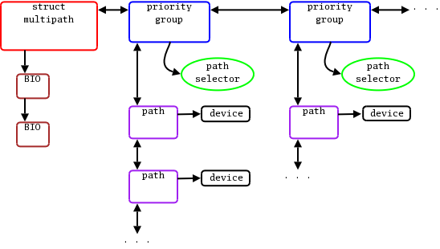

Multipath support in the device mapper
Support for multipath in Linux has traditionally been spotty, at best. Some low-level block drivers have included support for their specific devices, but support at that level leads to duplicated functionality and difficulties for administrators. Some thought has gone into how multipath is best supported: does that logic belong at the driver layer, the SCSI mid-layer, the block layer, or somewhere else? The conclusion that was reached at last year's Kernel Summit was that the device mapper was the best place for multipath support.
That support has now been coded up and posted for review; it was added to the 2.6.11-rc4-mm1 kernel. When used with the user-space multipath tools distribution, the device mapper can now provide proper multipath support - for some hardware, at least.
Internally, the multipath code creates a data structure, attached to a device mapper target, which looks like this:

When time comes to transfer blocks to or from a device mapper target representing a multipath device, the code goes to the first priority group in the list. Each group represents a set of paths to the device, each of which is considered equal to the others; the preferred paths (being the fastest and/or most reliable) should be contained in the first group in the list. Priority groups include a path selector - a function which determines which path should be used for each I/O request. The current patches include a round-robin selector which simply rotates through the paths to balance the load across them. Should situations arise which require more complicated policies, it should not be tremendously difficult to create an appropriate path selector.
If a given path starts to generate errors, it is marked as failed and the path selector will pass over it. Should all paths in a priority group fail, the next group in the list (if it exists) will be used. The multipath tools include a management daemon which is informed of failed paths; its job is to scream for help and retry the failed paths. If a path starts to work again, the daemon will inform the device mapper, which will resume using that path.
There may be times when no paths are available; this can happen, for example, when a new priority group has been selected and is in the process of initializing itself. In this situation, the multipath target will maintain a queue of pending BIO structures. Once a path becomes available, a special worker thread works through the pending I/O list and sees to it that all requests are executed.
At the lower level, the multipath code includes a set of hardware hooks for dealing with hardware-specific events. These hooks include a status function, an initialization function, and an error handler. The patch set includes a hardware handler for EMC CLARiiON devices.
Comments on the patches have been relatively few, and have dealt mostly
with trivial issues. The multipath patches are unintrusive; they add new
functionality, but do not make significant changes to existing code. So
chances are good that they could find their way into the 2.6.12 kernel.
| Index entries for this article | |
|---|---|
| Kernel | Device mapper |
| Kernel | Multipath I/O |
Posted Feb 24, 2005 17:15 UTC (Thu)
by James (guest, #4884)
[Link] (4 responses)
We're quite happy with IBM SATA disk controllers (DS4100), expanded with EXP100 units. Each
Oh, and each 1U SVC host is running some form of Linux, supposedly.
Huge thanks to Alisdair et al. for their time on this code. Its way cool.
Posted Feb 25, 2005 17:44 UTC (Fri)
by giraffedata (guest, #1954)
[Link] (3 responses)
People started counting storage equipment by counting LUNs because it solved the ambiguity of what you consider one unit. Like counting spindles of disk or heads of sheep (even though you aren't actually interested in the spindles or heads themselves). Now, it doesn't solve any ambiguity and using a LUN as a metaphor for the function of a logical unit is just wrong.
Speaking of identifying units, I notice that you plug your fibre channel cables into a "solution." I wonder if that's something technical people would know better by an older name, such as "subsystem" or "network."
Posted Feb 25, 2005 20:15 UTC (Fri)
by Max.Hyre (subscriber, #1054)
[Link] (1 responses)
Sadly, I saw this in actio earlier today. A colleague, a
mostly-techno type, was describing a test setup to me. He really
said, ``The client bridge can plug into both wireless and wired
solutions''. When I asked whether he was trying to describe wireless
and wired networks (it's even a syllable shorter), he allowed as how
he was. :-(
Posted Feb 25, 2005 20:19 UTC (Fri)
by Max.Hyre (subscriber, #1054)
[Link]
It seemed to be so simple a comment that I didn't really proofread it.
Posted Feb 26, 2005 18:22 UTC (Sat)
by lutchann (subscriber, #8872)
[Link]
Posted Nov 7, 2005 13:04 UTC (Mon)
by maddy (guest, #33674)
[Link]
This has also been tested against IBM San Virtual Controller (SVC), where 8 data paths are Multipath support in the device mapper
available to each LUN. Each (Linux) host has two physical fibre HBAs in them, each HBA
connecting to a separate fibre switch. Each switch in turn is connected to two (or more) nodes of
the IBM SVC solution. The SVC product virtualises real storage; it partitions the fibre network into
two parts (kind of like two vlans on an IP switch). In one side, we have a SAN controller, or several
SAN controllers (eg, IBM DS4100, or other manufacturers). On the other, we have the hosts. All
hosts talk to the SVC for access to the storage. SVC controls what goes where. It can stripe
across multiple SANs, and do on-line migration of data between SANs, replication, etc. Plus
online growth of LUNs. It also has gigs of memory to cache the I/O operations, so it is really fast
(all battery backed by its own required UPS). The SVC nodes themseleves are just 1U rackmount
boxes with loads of HBAs and these large UPS' attached.
chassis is 3.5T raw, and lots cheaper than SCSI. Using the SAN controller, create RAID1 or RAID5
arrays, which makes real LUNs (managed disks or mdisks in SVC lingo). SVN then takes those
LUNs, and stripes them up. You can then create virtual LUNs (vdisks) that the hosts see across
the 8 I/O paths that multipath here uses. So you then have large, expandable, on-line movable,
snapshottable (at multiple levels - LVM and within the SVC), HA disk.
In most cases, it's just intellectually irritating when people call SCSI logical units LUNs (LUN = logical unit number). But when you're talking about a complex network like this with multiple paths, it's downright confusing. If there are 8 paths to a LU, the LU could have 8 different LUNs.
LUNs and LUs
``Solution''s eating the heart out of technical discussion
`actio' --> `action'
I tend to think of "solution" as just a pretentious term for "thingy". Doing that word substitution in my head makes IT marketing literature somewhat more tolerable.LUNs and LUs
what is device mapper ? how it works ? why we need it ?Multipath support in the device mapper
if any one knows kindly help me